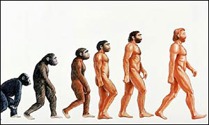

Amikor Ch. Darwin 1859-ben megjelentette A fajok eredete című munkáját, már tudott arról, hogy három évvel azelőtt Németországban találtak egy fosszilis csontvázat, amely egy jégkorszakban élt és a mai embernél "primitívebb" megjelenésű ember maradványa volt. Így a könyvében utalhatott arra, hogy az evolúció törvényszerűségei az emberre is vonatkoznak.